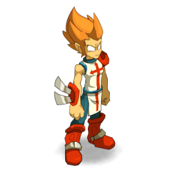
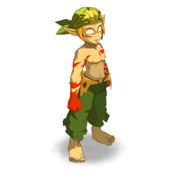

<div class="builder">
    <nav class="navbar" role="navigation" aria-label="main navigation">
      <div class="navbar-brand">
        
      </div>

      <div id="navbarBasicExample" class="navbar-menu">
        <div class="navbar-start">
          <a class="navbar-item">
            Home
          </a>
          <a class="navbar-item">
            Equipements
          </a>

          <a routerLink="sorts" class="navbar-item">
            Sorts
          </a>
        </div>

        <div class="navbar-start">
          <div class="navbar-item">
           Sélection du niveau :&nbsp;<dsb-niveau></dsb-niveau>
          </div>
          <div class="navbar-item">
            Sélection de la classe :&nbsp;<dsb-classe></dsb-classe>
          </div>
        </div>

        <div class="navbar-end">
          <div class="navbar-item">
            <div class="buttons">
              <a class="button is-primary">
                <strong>Sign up</strong>
              </a>
              <a class="button is-light">
                Log in
              </a>
            </div>
          </div>
        </div>
      </div>
    </nav>

  <main>
      <div class="columns">
        <div class="column is-4">
          <dsb-characteristique1></dsb-characteristique1>
          <dsb-characteristique2></dsb-characteristique2>
          <dsb-characteristique3></dsb-characteristique3>
          <dsb-characteristique4></dsb-characteristique4>
        </div>

        <div class="column is-4">
          <dsb-stuff2></dsb-stuff2>
          <div class="classe">
            
          </div>
          <div class="classe">
            
          </div>
          <dsb-panoplie-bonus></dsb-panoplie-bonus>
        </div>

        <div class="column is-4">
          <dsb-stuff1></dsb-stuff1>
        </div>
      </div>
  </main>
</div>
